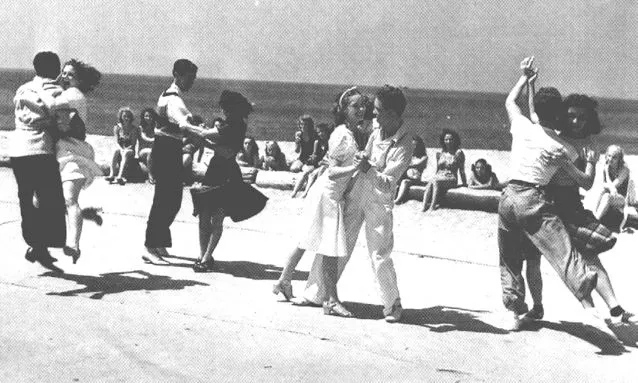

Свинг (от англ. swing, раскручивать) — группа танцев под музыку джаза, развившихся в поздние 1920—1940-е годы, и в том числе современные произошедшие от них стили.
Наиболее популярные стили:
 Balboa Blues Lindy Hop Solo Jazz
Для подбора музыки с помощью ИИ пройдите по ссылке.